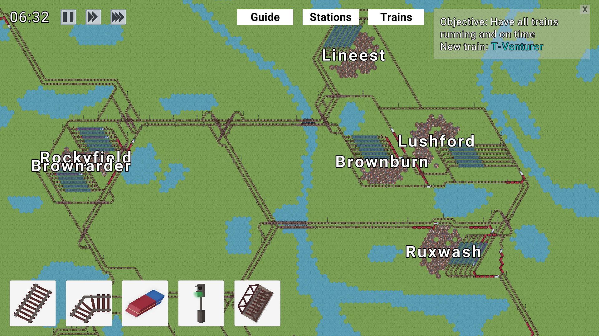
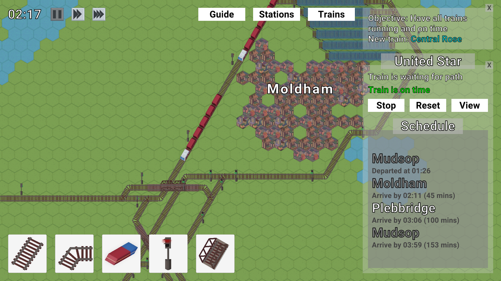

Hexrails
- Developed as part of my coursework, alongside an artist
- Developed in Unity
- Designed and programmed a train management game
Hexrails was developed as part of my coursework on Computer Science for Games. The task also involved project management using tools such as Trello and planning the design of the game in the form of a Game Design Document.
I decided to make a train management game, having enjoyed that kind of gameplay in games such as OpenTTD and Factorio. The game generates a random map and keeps adding trains with random schedules as you progress. You place down tracks and signals to get trains to their destinations. Your goal is to maintain an efficient train network and make sure no trains are late.
Developing Hexrails involved several programming challenges. The maps are procedurally generated using perlin noise. In order to randomly generate train schedules, the stations are connected in a graph that was generated using Delaunay triangulation. Train pathfinding is implemented using Dijkstra's algorhitm.
 